Life in My Twenties
Something I’ve been reflecting on a lot lately is my life in New York City and how much it has changed over the years. I was sitting in Washington Square Park a couple of weeks ago with a friend and it brought back memories of when I used to go there more often when I lived in the city for the very first time, back in the summer of 2018. That summer, I was interning at BlackRock and living in the NYU dorms on Lafayette Street. Looking back (and even in the moment!), that was one of the most fun summers of my life. NYC in the summer as an intern is a special time – college students from all over the country descending on a single city and mingling with interns from all different companies. I met one of my closest friends from college that summer at an event for interns from my school (UC Berkeley) who were in New York, and I’ve continued to cross paths with other people from that summer as the years have passed.
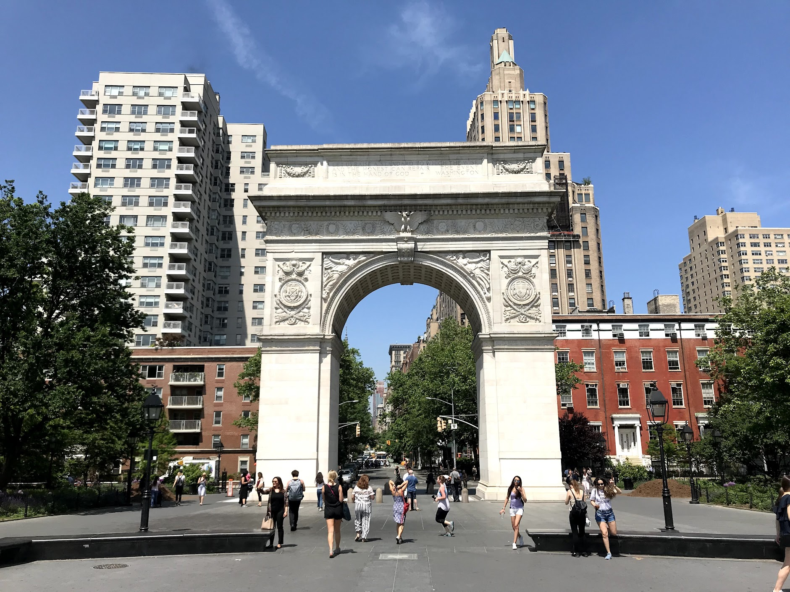
Summertime in Washington Square Park
Life as an adult in my twenties in New York has been in some ways similar to that summer. One way to view life in the city after school is that it becomes like a million college campuses combined into one. College in the US is one of the most interesting social phenomena, because it’s the one time in your life when you’re surrounded by tons of people your age, taking similar classes, doing similar student groups, and everyone’s all living in a geographically proximate space -- not to mention everyone is still in the formative years of their life. No other time in your life is really like that, despite some people’s best attempts to recreate it in adulthood. Third spaces are probably the closest thing to that in the city, which is why they're so interesting to me. For me, McCarren Track in Williamsburg has become one of these for me (come check out my track club, @fjl_tc, on Thursday evenings after work at 6:30pm!). Pottery studios (I tried a pottery class for the first time earlier this year) are another good example.
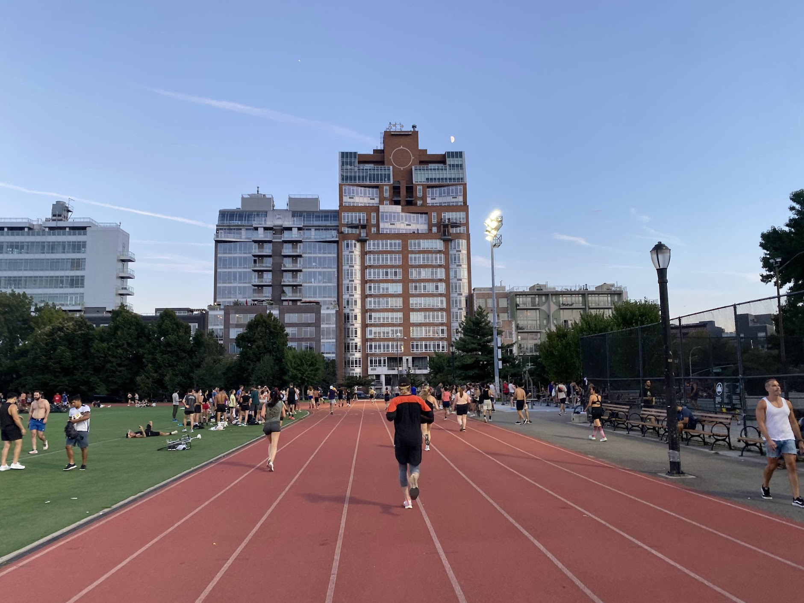
McCarren Track in Williamsburg
There’s also a lot of discourse on how adult friendships require a high degree of intentionality and reciprocality of effort, which all becomes a lot harder without the natural conditions that something like college provides for cultivating relationships. I can attest that this is very much the case in my life and my personal relationships are something that I’ve invested a lot in over the past couple of years. Even something like living in a different borough or different neighborhood from someone in New York can make it tougher to keep a relationship alive. But for me, I believe that having a strong inner circle is something that’s especially important in adulthood. And with adult relationships, it's very much a case of both being willing to take the initiative, but also recognizing that "if they wanted to, they would." Another interesting thing I noticed is how things like group chats, IG stories, Strava, etc. are among the ways that technology has helped facilitate human connection.
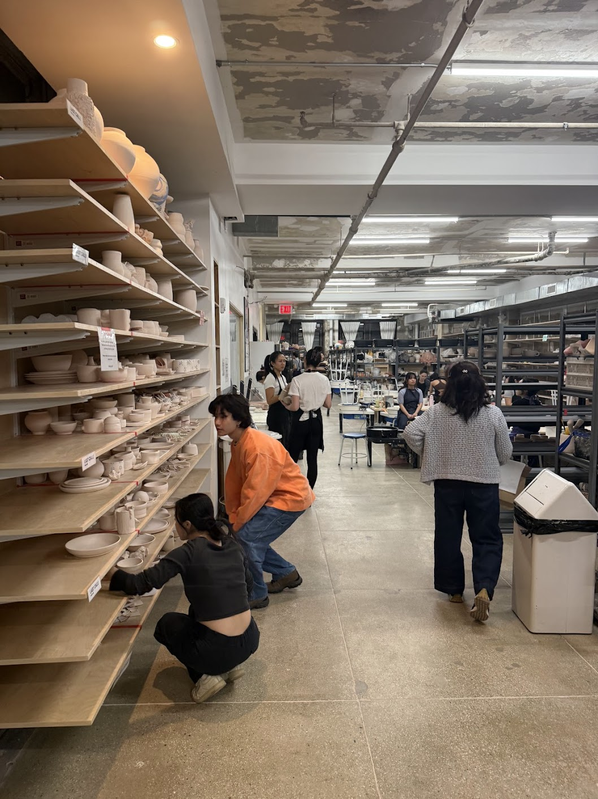
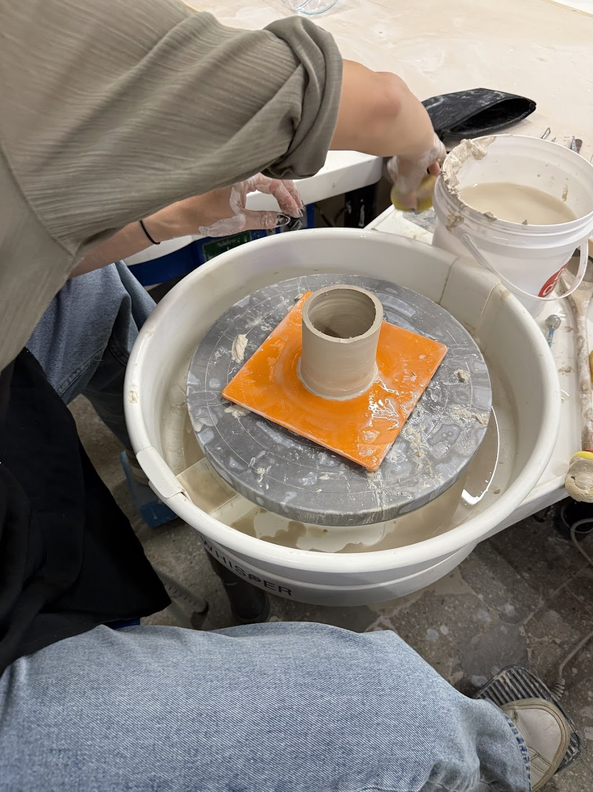
Doclay pottery studio in KTown
They say you’re the average of the five people you spend the most time with. One interesting way that things have played out is that I’ve ended up in a quite Asian-American social circle in New York. I grew up in a predominantly white / Jewish community in Westchester (Chappaqua), but I’ve historically always had many Asian-American friends. One thing that I’ve spoken with friends about is how because there are so many Asians in New York, even Asians who might have had more non-Asian friends in previous phases of life end up in very Asian circles in New York. There’s also a phenomenon where as an Asian person, when you meet another Asian person, you usually have an immediate high degree of shared context, cultural background, and similar upbringing when you talk to them, which greatly facilitates making those connections. This is not to say I only have Asian friends, but I still find it to be an interesting way that things play out sociologically. A lot could also be said about the various dynamics that take place between Asians, Asian-Americans, international school Asians, third culture kids, and the many other variations.
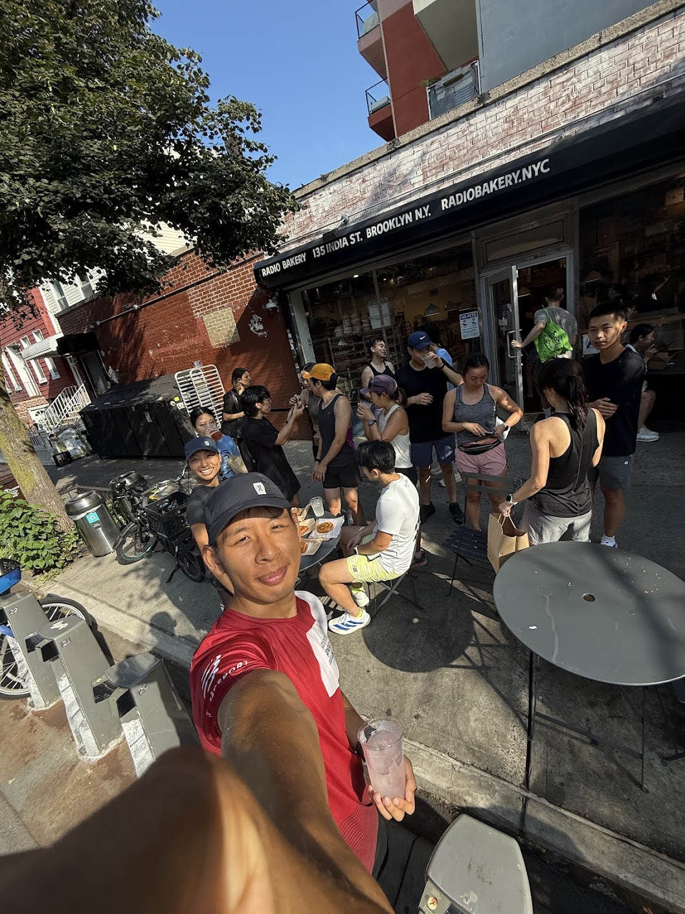
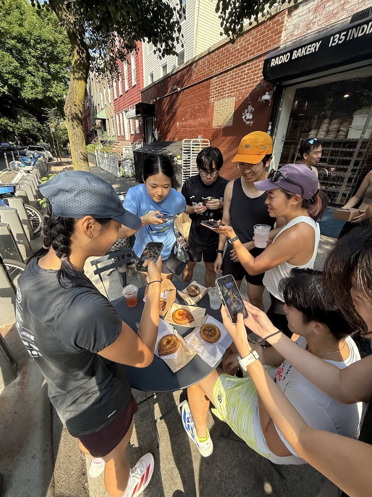
Sometimes people ask if all my friends are Asian
In terms of the activities that people spend their time on in their twenties in NYC, there is also a ton of variation. Some people really lock in and focus on their careers (like me for most of my twenties). Many people move into the city and immediately start exploring the bustling food and music scenes that New York has to offer. House parties are common, as well as hosting apartment cafes and dinner parties at people’s apartments (I was more into doing this last year, I hosted a matcha cafe and a milk tea cafe -- one of my goals is to host more in the remainder of this year when I'm in town). Birthday celebrations, housewarmings, housecoolings are also popular reasons to host gatherings. Another thing I find interesting is the great variety in types of social lives that people have. I feel like I'm someone who tends to float between different social groups, while I have other friends who remain with very tight-knit college friend groups. Historically, I was always more of a 1-1 friendship person, but as the years have progressed, I've found myself in more three- and four-person friend groups (I tend to not really enjoy being part of friend groups much larger than that size). However, I still value 1-1 connection the most.
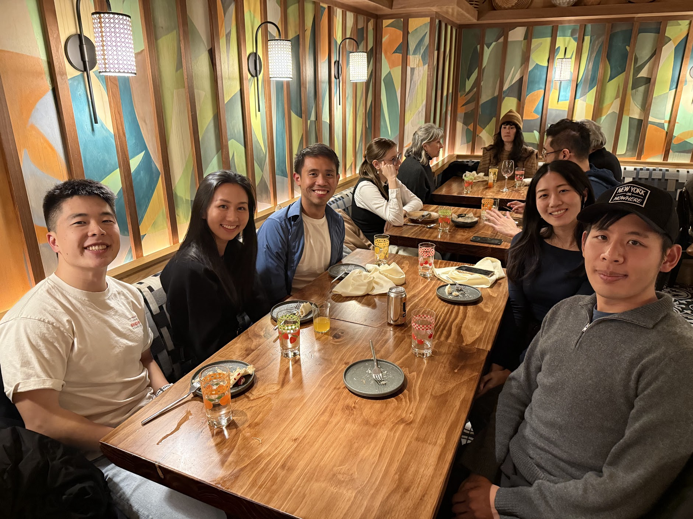
My most recent birthday celebration
I’ve noticed fitness-oriented communities have really taken off, perhaps most prominent of which has been the explosion of run clubs, but also with cycling groups, triathlon teams, sports leagues like Volo / Urban Professionals, high-end gyms like Equinox / Lifetime / Chelsea Piers, and wellness clubs like Othership / Bathhouse / The Altar. Workout classes, like Solidcore, yoga (hot and cold), Tone House are popular (especially with things like Classpass). Board game groups have also taken off, for example, poker / chess / mahjong, as well as social deduction games like Avalon / Secret Hitler / Blood on the Clocktower. Card games like Magic the Gathering are popular, and I even have a friend who made her own card game -- check out Toasty Toasts! There’s also a whole population of young people who spend their Friday and Saturday (and with WFH culture even Thursday) nights going out to bars and clubs, or places like Mission and Den. For me personally, I’ve explored a lot of new things in the city over the years, including participating in a basketball league for a season, checking out a lot of run clubs, playing a ton of sports (tennis, badminton, volleyball, ping pong, etc.), and going to different poker / board games / social meetups over the years. I also enjoy going to professional meetups such as the OOO Summit, NY Tech Week events, Manhattan Tech Collective meetups, etc.
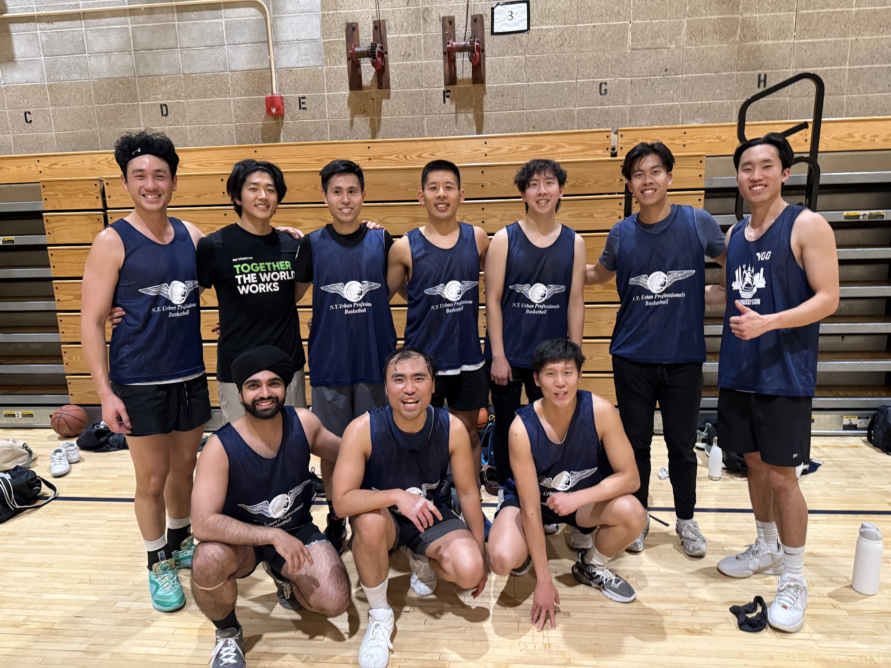
After a playoff game with the boys
Traveling is also super popular, as people are now earning more money in adulthood, particularly now with the great ease of both domestic and international travel and with the great democratization of commercial flight. People travel to music festivals, film festivals, and marathons around the world. People go camping in national parks, climbing in Las Vegas, and surfing in Hawai'i. People are getting their scuba diving licenses in Belize, signing up for ultramarathons in Tenerife, and going to pastry school in Paris. I tried skydiving for the first time last August in the Great Barrier Reef. I’ve even met people who travel to other cities just for restaurant reservations (I only got the Noma and Quintonil reservations after I already arrived in Copenhagen and Mexico City!)
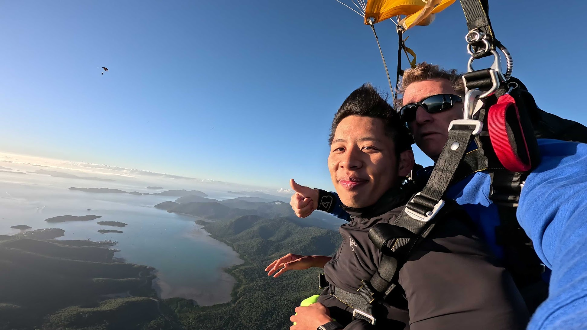
Skydiving over the Great Barrier Reef
The widespread usage of social media like Instagram, Strava, Beli, etc. has also fed into a culture of FOMO / "keeping up with the joneses", which although may not be specific to New York, has certainly been a cultural element to living here. This relates to another thing I’ve reflected on lately, which is how the world has very much become an attention economy – phones in particular exploit this to their most extreme extent, where apps and short-term video content fight for every second of your attention. Similarly, with limited time in everyone’s busy lives, there’s a constant tradeoff to who we spend our time with, which can lead to non-committal or flakey behavior (which I try to avoid) and which goes back to what I mentioned above about the intentionality required for adult relationships. People naturally prioritize who they care about the most as your time allocation naturally hierarchizes. I also find it personally important to allocate some time to myself each week, otherwise my social battery will be burnt out (I'm naturally an introvert, so I enjoy spending time to myself).
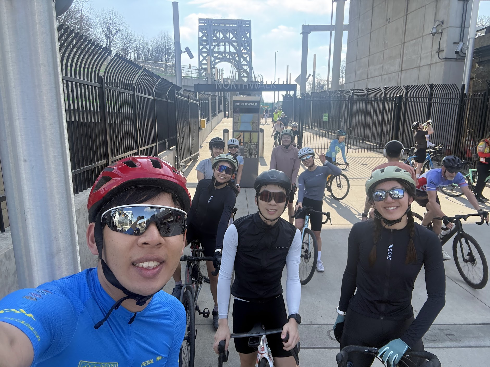
I can be easily convinced to do fitness activities
Because of all the activities one can do in their twenties in New York, this also explains why settling down in New York City is on average delayed compared to many other places in the country and world, where people get cuffed / married / have kids much sooner. In New York, people can easily go deep into their late twenties or even thirties living a similar lifestyle as their early twenties, although women generally tend to have more time pressure than men, especially if they want to have kids. I’ve also noticed there’s a great rise in young people in New York who don’t want to have kids at all (I want kids). For me, it’s been an interesting experience dating around in the first half of the year, and it's been cool to get to better know women who are living all sorts of their own versions of life in their twenties in New York. The dating market is further complicated by the illusion of infinite optionality that’s only been made worse by the proliferation of dating app culture and being surrounded by tons of high-achieving individuals. As a single person with friends in all stages of life these days, I’m personally quite bearish on dating apps, and still think that in-person connections are where it's at, although I do have plenty of friends in happy relationships who met on dating apps as well.
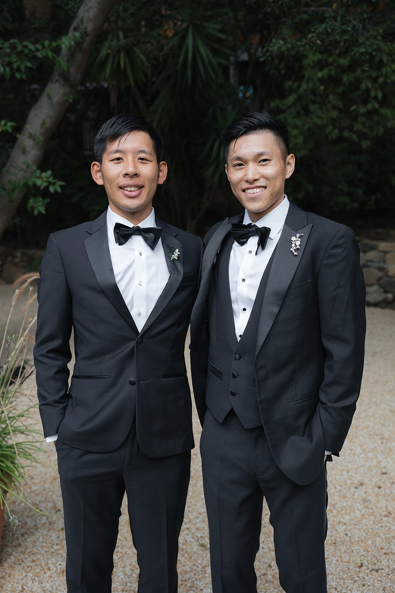
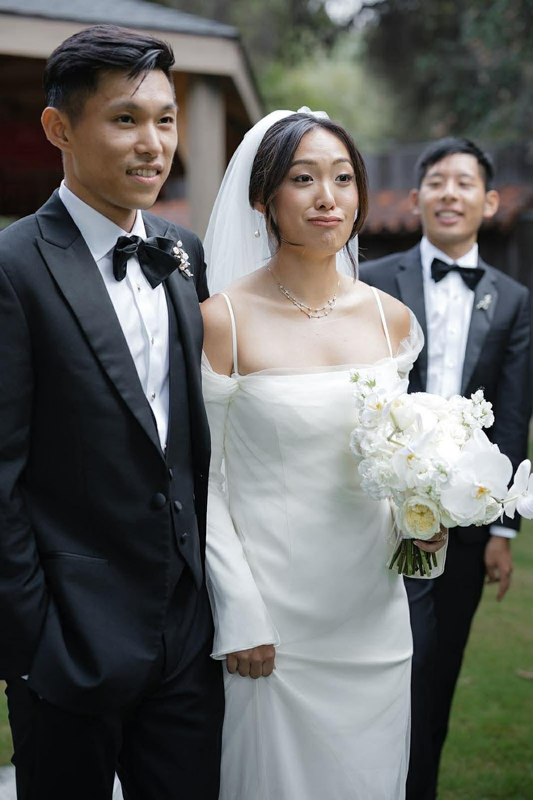
Went to my first wedding last year
Last September, I went to my first wedding, the wedding of my high school best friend, and I’m going to be going to two more this year. Over the next few years, this number will only increase. I have friends who have already been to tons of weddings, including those who seemed to be out every weekend last summer. It really is interesting how people are in all stages of life in their twenties in NYC. Recently with the coming of spring, it was interesting to see a span of a couple weeks when I heard about a whole wave of breakups (people getting ready for their hot boy / hot girl summers?). I’ve also been excited for my friends who have recently entered new relationships. In this period of life, it really does sometimes feel like a constant stream of new relationships forming and ending (will it change as we get older?). From a birds-eye view, the social ecosystem is truly a wild place. There’s also this phenomenon that naturally plays out where coupled people generally spend more time with other coupled people and single people with other single people.
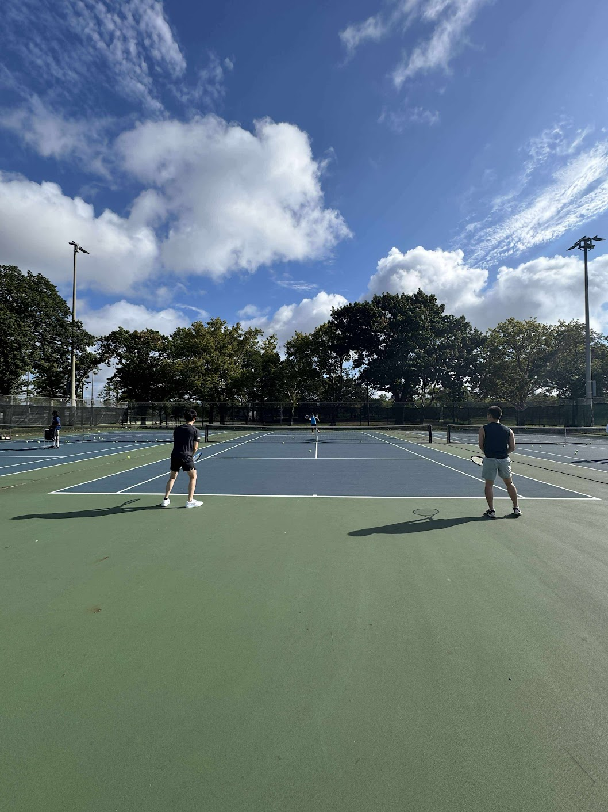
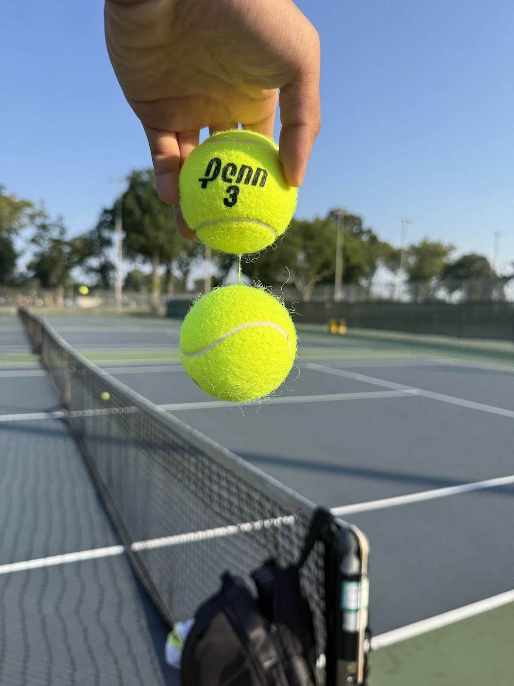
Tennis at Lincoln Park in Jersey City
As someone who has traveled not a small amount in my twenties (will hit my 46th country next week 👀 Can you guess which? If you guess right, I'll treat you to a meal), my summer travel schedule has once again started filling up. But I’m also remaining intentional about not being out of town too much. As is probably obvious by now, I’m someone who does enjoy my time in New York a lot. And if I’m to get into a more serious relationship, I can’t be out-of-town all the time. Things I’m excited for in the city this summer are some of the fun running races (like the Queens 10k, Twilight 5000, and 5k on the Beach) checking out more of the music, film, and theater scene in New York (Lincoln Center puts on their Summer for the City series, and long bike rides (continuing to train for my Gran Fondo bike race in France next month). I also look forward to spending more time with friends! Summer is a time of picnics and barbecues and I want to play tennis more (I was mostly going to Lincoln Park in Jersey City last summer, but also open to playing in Queens and Manhattan). I want to go back to Othership, which I went to for the first time recently, as well as check out Bathhouse / The Altar. I also want to go to more restaurants on my Beli list (@fjl if you want to connect!). Life is short and if you know me, you know that I’m someone who really tries to make the most of every day. So many things to do and not enough time!
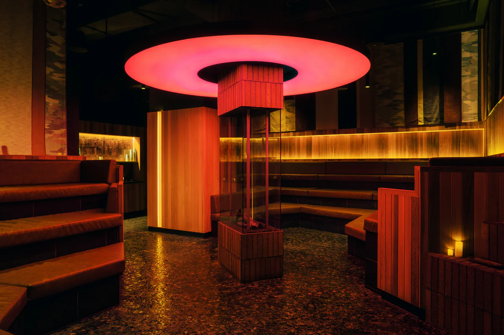
Othership sauna / cold plunge in Flatiron
To wrap things up, if you’ve made it this far, I appreciate you for reading this post! Like I mentioned above, we live in a world now where attention is a premium currency – a lot of people’s attention spans are down to zero now with the popularization of TikTok and Reels. I also know that not everyone enjoys reading long-form content (I personally am someone who enjoys consuming and creating both longer-form essays and longer-form video content). Another cool thing about New York is the fact that I’ve reconnected with so many people from past phases of my life and also met so many new people over the years through activities and mutual connections (Instagram, which I first got onto two years ago, has been a cool tool for this). If you have any thoughts on my writing, if you’re someone who I haven’t talked to in a while, or if you’re someone I’ve met before but haven’t talked to much, don’t be a stranger and feel free to reach out! I enjoy talking about a lot of things and just getting to learn about different people's human experiences in general. Being a human is weird and life is what you make of it. 🙂
Once again, thank you for reading and catch you in the next!